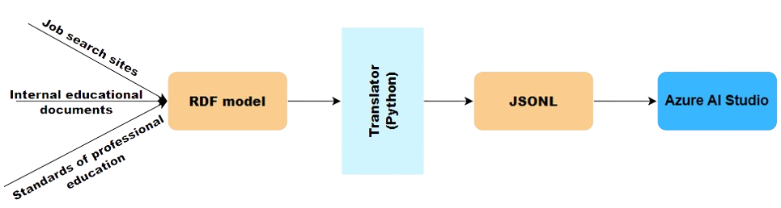

2024 © Kherson State University
KSU.AIOur project introduces a comprehensive methodology for creating intelligent assistants powered by artificial intelligence using the example of an education management chatbot. However, the proposed approach is universal and can be used to create intelligent assistants in any industry. In this presentation we describe the concept of development of the assistant and the technologies that were used to create it.
An intelligent chatbot for personalized educational management «Eva» was created
An educational management chatbot is used at Kherson State University to perform various administrative and educational tasks:
To develop an intelligent ChatBot we will use the following list of technologies:
Knowledge model: RDF
Development of the educational management model
Translator RdfToJsonl: Python, SPARQL
Automatic translation of RDF model to JSON.
Azure AI Studio accepts files in JSONL format for creating and configuring artificial intelligence models, including chatbots
Platform: Microsoft Azure ML
Microsoft Azure Machine Learning is a cloud platform for creating, training and implementing artificial intelligence models. It provides tools for developing and experimenting with various machine learning and deep learning algorithms, as well as for automating model training processes.
The advantages of Microsoft Azure include:
To create a model of educational management, we used data obtained from the following sources:
Having systematized the indicated data from job search sites (Work.ua, Robota.ua and others), as well as educational management documents, we developed a matrix of correspondence of vacancies with the necessary skills that are put forward to it, and educational components that cover the formation of these skills and competencies.
Matrix of correspondence between disciplines, skills and vacancies Specialty: Software Engineering
| Skills/Disciplines | Formal methods of software engineering | Full stack development | Software modeling and verification | Databases of distributed information systems | |
|---|---|---|---|---|---|
| Create and write technical documentation | |||||
| Modeling language:UML | |||||
| Modeling language:sysML | |||||
| Frontend development | |||||
| Backend development | |||||
| Verification and optimization of software | |||||
| Developing database |
The process of collecting and preparing data for chatbot training
The process of collecting and preparing data for chatbot training includes the following stages:
RDF notation
//Subject
Formal methods of software engineering
24
24
A course focusing on formal methods used in software engineering
for rigorous software development
https://Link to the syllabus
//Vacancy
Software Engineer
A professional involved in the design, development, testing,
and maintenance of software systems or applications, utilizing programming languages, tools,
and methodologies to meet project requirements.
//Skill
Modeling languages:UML
A proficiency in Unified Modeling Language (UML), a standardized
general-purpose modeling language in the field of software engineering for visualizing,
specifying, constructing, and documenting the artifacts of software systems
Discipline<SFMSE> --(Provide)-->Skills[CUML,CSML,…]--(necessaryFor)--> Vacancy<VSE>
The matrix is an important tool in the context of knowledge engineering for a bot. It helps to determine which specific skills and competencies are necessary for various vacancies. In addition, this approach will make it possible to improve the integrity of the model.
To train the algorithm, we chose the babbage-002/davinci-002 format for data presentation. Therefore, we are faced with the task of converting the resulting model into RDF, a JSONL format that Azure AI Studio accepts. Example of working JSONL, valid for training in Azure AI Studio:
{"prompt": "Good afternoon, please tell me at which address to pick up the diploma from the KSU?", "completion": "Good afternoon, Ivano-Frankivsk, 14 Shevchenko Street."}
To transform the model, a special translator was developed in the Python programming language using special SPARQL queries.
# SPARQL query
query = f"""
PREFIX rdf:
PREFIX rdfs:
SELECT ?subclass_label ?comment
WHERE {{
?subclass rdfs:subClassOf ;
rdfs:label ?subclass_label ;
rdfs:comment ?comment .
}}
"""
The next step is to save the query results in JSONL format, which was presented above:
# Execute SPARQL query and get results
result = g.query(query)
# Save results to a text file
with open(f"{search_criteria}.txt", "w", encoding="utf-8") as file:
for row in result:
result_dict = {
"prompt": str(row.subclass_label),
"completion": f"It is {search_criteria}
.{str(row.comment)}"
}
file.write(str(result_dict) + "\n")
The result of the parser was a JSONL file ready for use in Azure AI Studio. Below is a fragment of such a file:
{'prompt': 'Modeling languages:UML', 'completion': 'It is Competencies. A proficiency in Unified Modeling Language (UML), a standardized general-purpose modeling language in the field of software engineering for visualizing, specifying, constructing, and documenting the artifacts of software systems.'}
{'prompt': 'Modeling languages:sysML', 'completion': 'It is Competencies. A proficiency in Systems Modeling Language (SysML), a general-purpose modeling language for systems engineering applications.'}
Models page
Playground page
User interface of the assistant
In the course of the work, a methodology for creating an intelligent chatbot in the field of educational management was developed. This chatbot will allow automating students' search queries, and will also be useful for advising students in choosing an individual learning path. This methodology can be used not only in educational management, but also in other fields.
You can find more details in the relevant articles:
For more information, please contact us:
KSU.AI@gmail.com